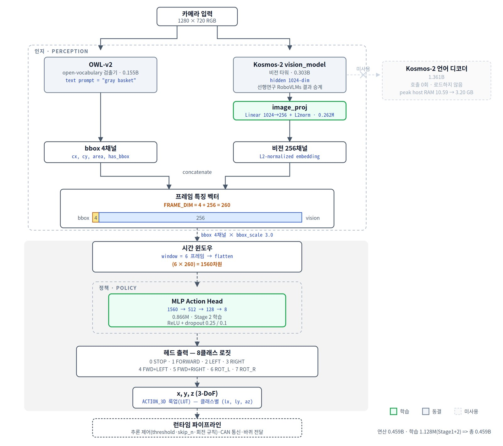
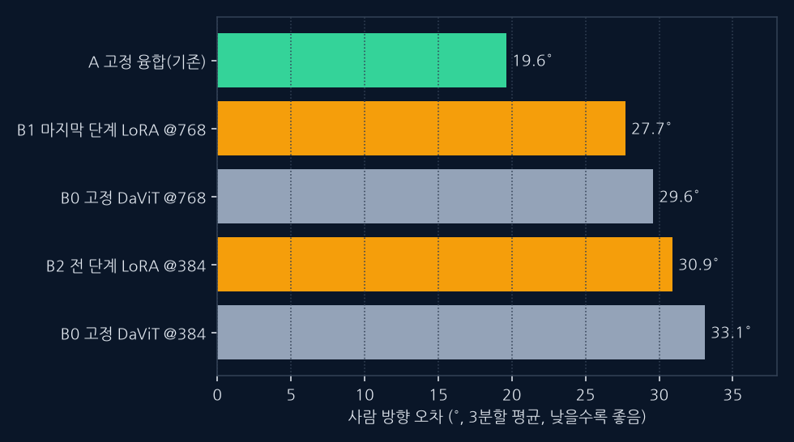
| 시도 | 결과 |
|---|---|
| 월드모델식 보조 손실 (미래 bbox·특징 변화 예측) | 변화 예측은 잘함, 타깃 반응 S는 안 오름 → 1단계에서 중단 |
| 서보 라벨(타깃으로 향하는 방향 라벨 혼합) | 타깃 반응 S ↑, 오프라인 방향 오차는 ↑(나빠짐) |
| 서버 서보 혼합(A1) | 실기 11/23 — 효과 약함 |
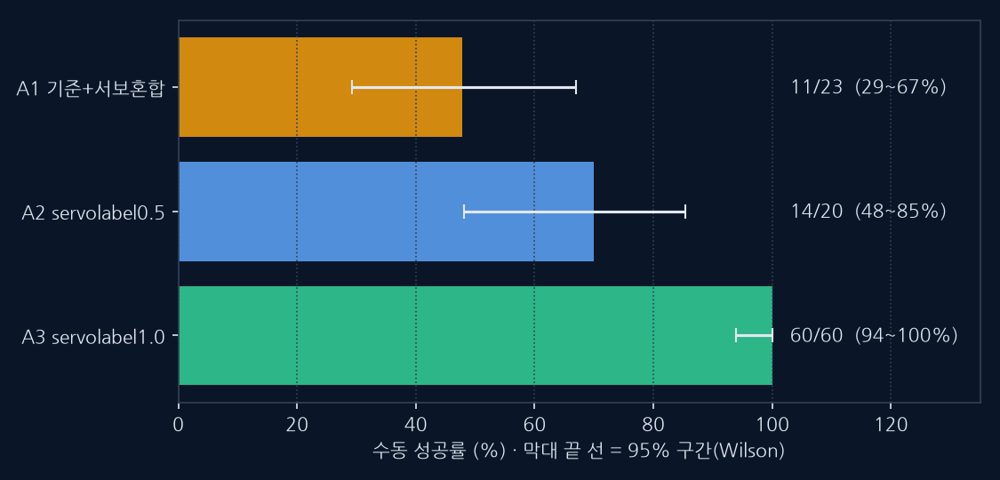
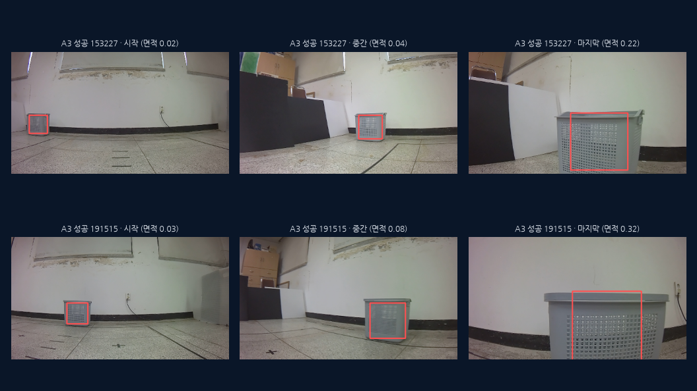
| 구분 | 기준 |
|---|---|
| 정의(수동) | 현장에서 사람이 기록한 결과 열(성공/실패) |
| 성공 세션의 영상 특징 | 마지막 타깃 면적 0.20~0.34(정지 기준 0.25 근처), 타깃 소실 0프레임, 평균 13.5스텝 |
| 실패 세션의 영상 특징 | 타깃 소실 · 과접근(면적 0.45 이상) · 엉뚱한 물체 추종(A1·A2 실패 16건) |
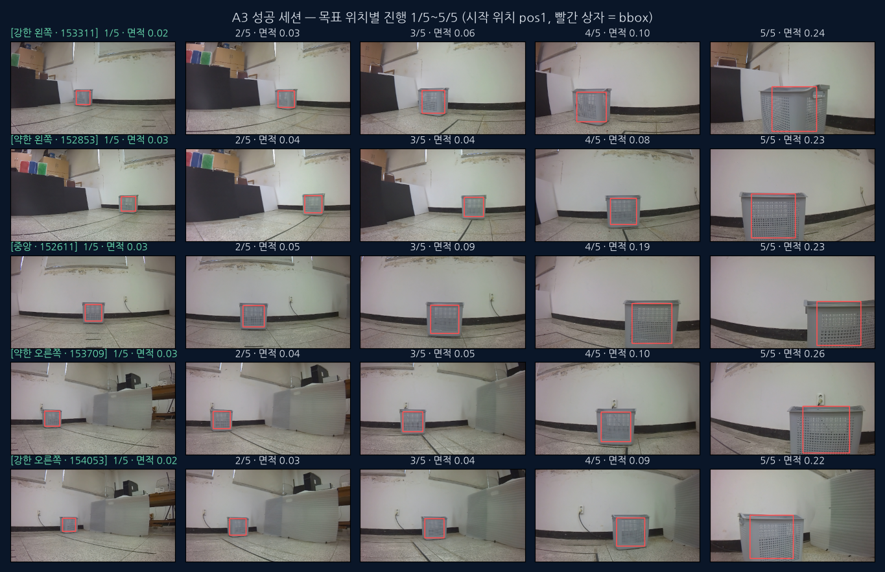
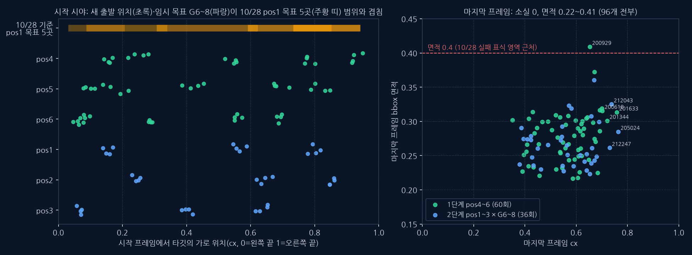
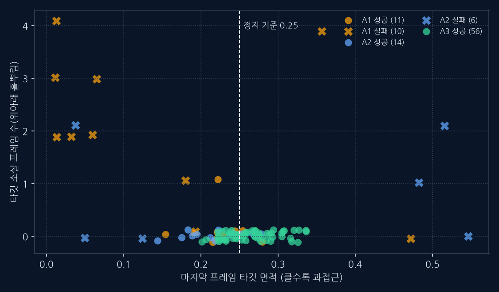
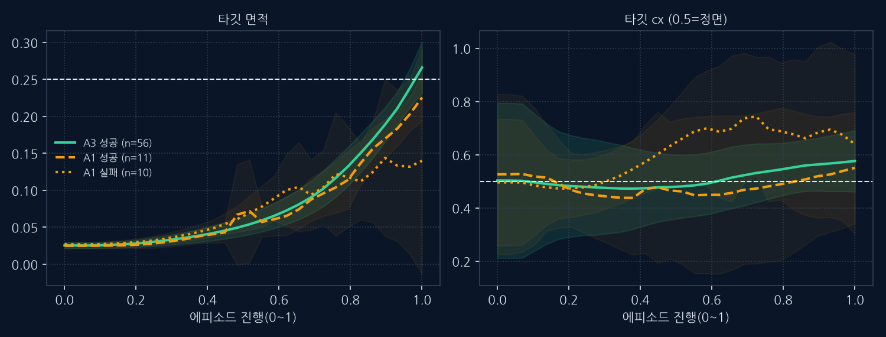
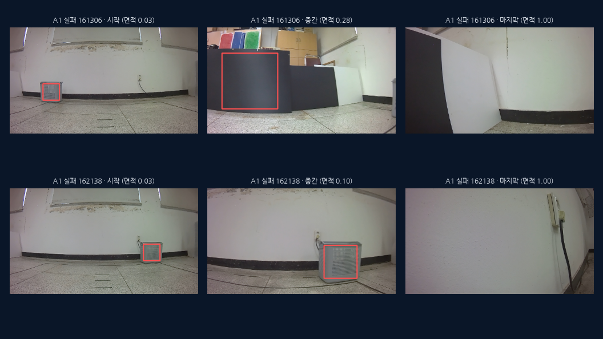
| 단계 | 측정 | 알려준 것 | 한계 |
|---|---|---|---|
| ① 오프라인 방향 오차 | 사람 방향과의 차이 | A3 +22° → 선택 기준 부적합 | 사람 조작=정답 가정 |
| ② 반사실 민감도 S | 타깃 cx ±0.2 이동 시 행동 변화 | 서보 라벨↑ → S↑ | 오프라인 지표 |
| ③ 구조 비교 | E2E·월드모델 3분할 | 대체안이 기존 방식을 못 이김 | 저예산 변형만 |
| ④ 실기 폐루프 | 수동 성공 + H5 교차 확인 | A3 63/63 | ASYNC·EMA 0.0, pos1 |
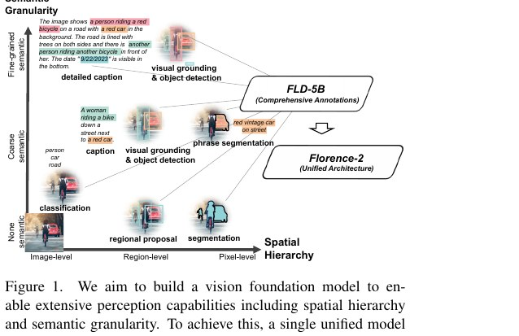
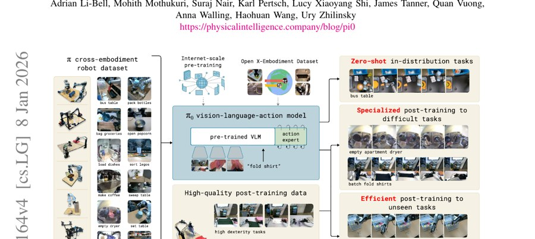
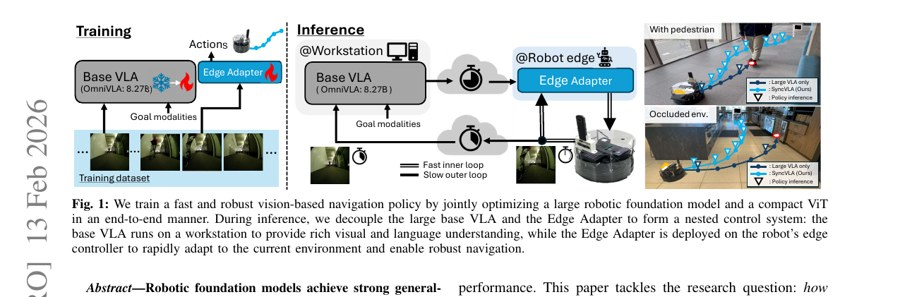
| 자료 | 링크 | 용도 |
|---|---|---|
| RoboVLMs — What Matters in Building VLA Models | arxiv.org/abs/2412.14058 | 선행연구 프레임워크(Kosmos-2 백본 학습 레시피) |
| OpenVLA | arxiv.org/abs/2406.09246 | VLA 대표 베이스라인 |
| NaVILA | arxiv.org/abs/2412.04453 | 내비게이션 VLA 비교(실기 지표 방식) |
| MobilityVLA | arxiv.org/abs/2407.07775 | 지시 기반 내비게이션 VLA |
| TIC-VLA | arxiv.org/abs/2510.03342 | 지연 보정 내비게이션 VLA |
| OpenFrontier | arxiv.org/abs/2603.05377 | 그라운딩 기반 일반 내비게이션 |
| TANGO | arxiv.org/abs/2609.09158 | 휴머노이드 내비게이션 VLA |
| π0.7 (월드모델 서브골) | arxiv.org/abs/2604.15483 | 월드모델식 시도의 동기 |
| V-JEPA 2 | arxiv.org/abs/2506.09985 | 잠재 공간 미래 예측(월드모델식 시도의 참고 방향) |
| DiT (AdaLN-Zero) | arxiv.org/abs/2212.09748 | 헤드의 조건 주입 방식 |
| Flow Matching | arxiv.org/abs/2210.02747 | 행동 생성 학습 원리 |
| LoRA | arxiv.org/abs/2106.09685 | E2E 시험의 미세조정 방식 |
| Florence-2-base (HF) | huggingface.co/microsoft/Florence-2-base | 사용 체크포인트 |
| OWLv2 ensemble (HF) | huggingface.co/google/owlv2-base-patch16-ensemble | EGVLA1 검출기 |
| Kosmos-2 (HF) | huggingface.co/microsoft/kosmos-2-patch14-224 | EGVLA1 비전 타워 |
| 레포 | github.com/minuum/EdgeGroundVLA | 코드·문서(branch inference-integration) |